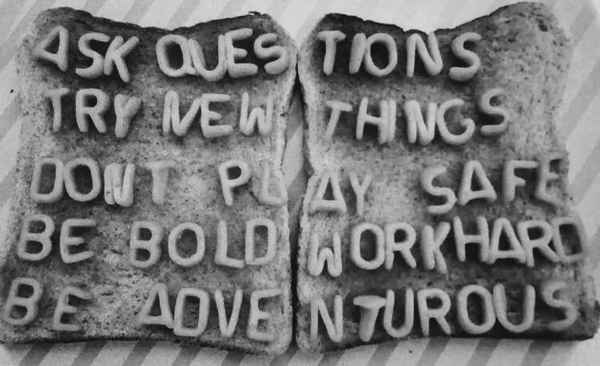

About
Minimum Viable Product
of the RSP
Last updated 30/03/2020 version 0
01. Where are we today?
Many channels, complexity, outdated information, no clear flow for the user…
Confusion
Where should I go to discover and learn more about the RSP solutions today?
How can we make it
simple for the user ?
02. Who are we designing for?
EC Digital Strategy
03. What do our users need?
Understand how we can better help them through the RSP catalogue in selecting, understanding and deciding to use an RSP solution
We want to offer them a good user experience
…using a single entry point – DIGIT’s service catalogue –helping them find the information they need.
User
Research
Understand user needs, the content they expect and their journey
Design
Concept
Based on the results of the user research, define the concept, navigation, content, etc. for the MVP
MVP &
User Tests
- Develop the MVP
- Testing users to get feedback withon their user experience
04. Our manifesto
“Act like a kid
We want to approach this challenge with an open mind
Get inspiration from modern solutions...
asking what if... questions…
Make DIGIT fit for the digital age
“ Children are unafraid to voice their wildest thoughts and questions. Il was a child who exposed the fact that the Emperor was naked, when all adults were convinced that he wore a robe.
From “How to have great ideas. A guide to creative thinking.”
John Ingledew
05. What we will do?
Background
Action 1.2 of the RSP Catalogue Action Plan: Launch UX study and build a working Minimum Viable Product for the RSP.
From « In » scope in the RSP project charter: The project will ensure that the implementation of the RSP will happen in line with users'expectations.
Minimum Viable Product of the RSP user interface
Interactive HTML pages to simulate what the RSP catalogue could look like, based on the findings from the user research phase (in line with the mandate set in the RSP Project Charter and related documentation).
The MVP should allow us to test with Users and get early feedback assessing their experience and defining future steps.
“MVP is the fastest way to test fundamental « business hypothesis » with the minimum amount of effort and to understand better our product, audience and requirements.
“The Lean Startup”,
Eric Ries
Goals of an MVP
Start the process of learning as quickly as possible and find out what parts to build next, or which parts weren’t necessary.
06. What to expect from the MVP
The MVP is only part of the larger RSP project and is intended to test how a catalogue of RSP services might work for the target users (i.e. « customers ») of those services.
We will use prototyping to explore options and solutions for creating a catalogue of RSP services and then to understand how people experience this future solution that our prototyping will suggest.
Possible outcomes after testing the MVP with users:
Plan for implementation (full design and development of the RSP catalogue with additional features, different views, etc.)
Further prototyping to explore other options and solutions or to test additional features and views
Out of scope
An MVP is not a full-fledged product that contains all needed features, screens etc. Therefore it will focus on developing the minimum set that is needed to test the user experience of an RSP catalogue (answering the prototyping question)
- Full set of screens, functionalities, views, etc.
- Governance processes (e.g. for content updates, etc.)
- SEO (i.e. ways for the user to discover the service. Our testing will start from the DIGIT Service Catalogue.)
- Streamlining of the existing catalogues (wikis, websites...)
07. What we want to learn through the MVP
How would an RSP catalogue create a positive experience in helping the users to understand the service offering and decide to use a service?
It is usually impossible to prototype every aspect, we need to make a decision about which aspects are most important to explore and evaluate through this phase.
Audience
potential / actual users of RSP solutions, i.e. « clients » of the RSP
Scope and scale
prototyping the UI of the RSP catalogue for the users of the RSP services, starting from the DIGIT Service Catalogue as entry point (mainly focusing on the « Interest » phase of the user journey, i.e. discovering the offering)
Methods
design thinking process, methods and tools, such as semi-structured user interviews, personas, journey maps (user research phase), participant observation, surveys (prototype testing), and others depending on the findings and needs during the process
Fidelity
several prototyping loops allowing for multiple validation points with users – paper prototype, interactive clickable wireframes of 1 or 2 services using prototyping tools, digital prototype (MVP)
Technology for the MVP
HTML and CSS (as technology-agnostic as possible to allow future integration in a CMS such as Drupal)
08. The process & timeline
FEB 2020
Desk Research
Existing documentation and product requirements (such as user-centricity)
Results of prior user research
Reusable Solutions 1st wave: what information exists already and where
Outcomes
- List of selected users to be included in the user research phase
- Scoping the user research phase
MAR 2020
User Research
Understand the whole flow for the users: working with users to define personas and journey maps
Outcomes
- Understand better who our target users are (personas)
- Understand better how to offer the reusable services to our target users (journey maps)
AVR 2020
Ideation & Concept
Based on the results of the user research, define the concept, navigation, content, etc. for the MVP
Early testing of low-fidelity prototypes with a few users
Outcomes
- MVP mock-ups and early feedback to be used in the implementation phase
MAY 2020
Implementation & UX Testing
Implementation of the mock-ups (development)
Testing with users to get feedback on their user experience
Outcomes
- MVP and user feedback results
The Team(s)
MVP team
Yuliya Krumova
Project-Communication Manager / UX Designer / Storyteller
Virginie Mangelinck
UI Designer-Developer
Subject matter experts
and key stakeholders
DIGIT.D3 / DIGIT.B3 / DIGIT.A1